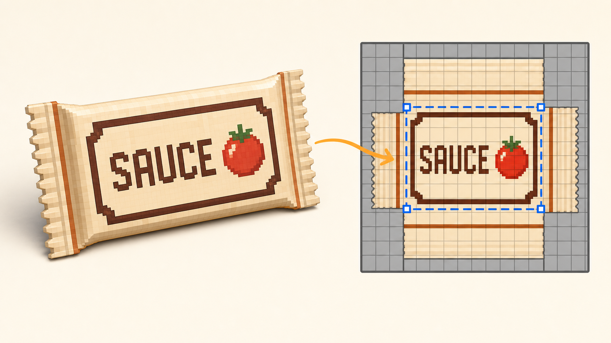

Day 12 - Week 2: UV control
12UV cleanup - fix stretch, rotation, mirroring, and pixel snap
You already placed one menu patch with UV mapping and used seams to generate a bottle texture. Today you practice the UV fixes that make texture work feel controllable: position, size, rotation, mirror, snap to pixels, and export the UV layout for checking.
One UV cleanup proof render: a small condiment packet or flat sauce sachet with a front label that is upright, not stretched, not backward, and aligned to the texture's pixel grid.

Warm up - 30-second recall
Answer first, then open the cards.
What does UV mapping change?
What did Lesson 7 prove with the menu sign?
What did Lesson 10 prove with the sauce bottle?
The one new idea - UVs have five simple failure modes
When a texture looks wrong, beginners often repaint it. First check the UV. Most beginner UV problems are one of these: the UV rectangle is in the wrong position, the UV size is stretched, the UV is rotated, or the UV is mirrored. Pixel-art textures add one more issue: corners can sit between pixels, making the result look soft.
| Symptom | UV cause | Fix |
|---|---|---|
| The label shows the wrong area. | UV position is wrong. | Move the UV rectangle over the correct patch. |
| The label is tall, wide, or smeared. | UV size does not match the face. | Use Auto UV, then resize the rectangle. |
| The word is sideways or upside down. | UV rotation is wrong. | Use Rotate UV or Turn Mapping. |
| The word reads backward. | UV is mirrored. | Use Mirror X or Mirror Y. |
| Pixel edges look soft. | UV corners are off-grid. | Use Snap UV to Pixels. |
Before repainting a label, ask: position, size, rotation, mirror, or snap? Fixing the UV is often faster than redrawing the texture.
Settings tutorial - the UV panel controls
Keep the UV Function Cheatsheet open. Today you are not learning every UV command. You are building a repair loop you can use on future labels, icons, decals, signs, boxes, and packaging.
| Control | Use it today for | Stop when |
|---|---|---|
| Auto UV | Recover a sensible UV size after stretching. | The patch no longer looks wildly stretched. |
| Move / resize UV | Put the face over the exact label patch. | The whole label sits inside the face. |
| Rotate UV / Turn Mapping | Make text upright. | The label reads normally from the front camera view. |
| Mirror X / Mirror Y | Fix backward text or asymmetric icons. | The letters and sauce dot are no longer reversed. |
| Snap UV to Pixels | Keep pixel-art edges crisp. | UV corners sit on the texture grid. |
| Export UV Mapping | Save a layout proof image. | You have a screenshot or exported layout for your post. |
Do it with me
Make a small sauce packet. It is simple enough that the modeling will not steal time from the UV practice, but it is useful for the kitchen asset pack.
-
New Generic Model - name it
Save early. This is a small flat condiment packet or sauce sachet, not a full new modeling challenge.sauce-packet-uv-cleanup -
Build the packet body
Add one flat cube. Suggested size:X 4.5,Y 3,Z 0.25. Fill it with Cream. Rename itpacket_body. -
Add two tiny folded ends
Add two very thin cubes on the left and right edges. Fill them with Wood or a slightly darker cream if you prefer. These folds make the prop read as packaging. -
Create a 32 x 32 texture
In the Textures panel, create a texture namedsauce-packet-textureat32 x 32. Keep the texture small so UV placement mistakes are visible. -
Paint one clear label patch
In Paint Mode, draw a small front label patch somewhere on the texture: a cream or dark border, the wordSAUCEor simple block letters, and one tomato-red dot. Leave empty color space around it so the UV rectangle has room to move. -
Select the packet front face
Switch to Edit Mode. Selectpacket_body, then select the face that points toward the camera. In the UV panel, make sure you are editing the selected/front face, not the whole cube by accident. -
Place the UV rectangle over the label
Move the selected face's UV rectangle over the label patch. Resize it so the full patch appears on the packet front. If the result looks stretched, use Auto UV once, then resize again by hand. -
Break it on purpose: rotate the UV
Use Rotate UV Left, Rotate UV Right, or Turn Mapping so the label becomes sideways. Then fix it. This makes the repair action memorable. -
Break it on purpose: mirror the UV
Use Mirror X or Mirror Y so the label reads backward. Then mirror it again or use the opposite mirror until the word reads normally. -
Snap the UV to pixels
Use Snap UV to Pixels. This is the final cleanup pass for crisp pixel art. If the command moves the UV slightly, adjust the rectangle again and snap one more time. -
Map the back simply
Select the packet back face and map it to a plain cream area of the texture. Do not put the same readable label on the back unless you want duplicate packaging art. -
Export or screenshot the UV layout
Use Export UV Mapping if available, or take a screenshot of the UV editor. Your proof image should show the front face rectangle sitting cleanly over the label patch. -
Render the packet
Capture a 3/4 front view. Place the packet beside the sauce bottle, prep counter, or chopping board if you want the screenshot to feel like part of the same kitchen pack. -
Post your Day-12 update
Publish two images: the final render and the UV layout or UV editor screenshot. Streak: Day 12.
If the label is backward or sideways, do not redraw the letters. That is a UV orientation problem. Fix the UV first, then paint only if the artwork itself needs improvement.
Use this order every time: select the correct face -> move -> resize -> rotate -> mirror -> snap -> check on the model.
itch.io post (English):
RedNote / 小红书 (中文):
Quick self-check
Say the answer first, then open the card.
If a label shows the wrong part of the texture, what changes?
If the label is stretched, what changes?
If the word is backward, what changes?
Why use Snap UV to Pixels?
Use the UV Function Cheatsheet for the local source-backed list of Blockbench UV actions, including Auto UV, Rotate UV, Mirror X/Y, Snap UV to Pixels, and Export UV Mapping.
If the label lands on the wrong face, stretches, flips, or looks blurry, send me the model screenshot and the UV editor screenshot. I can tell you which part of the UV repair loop to use.